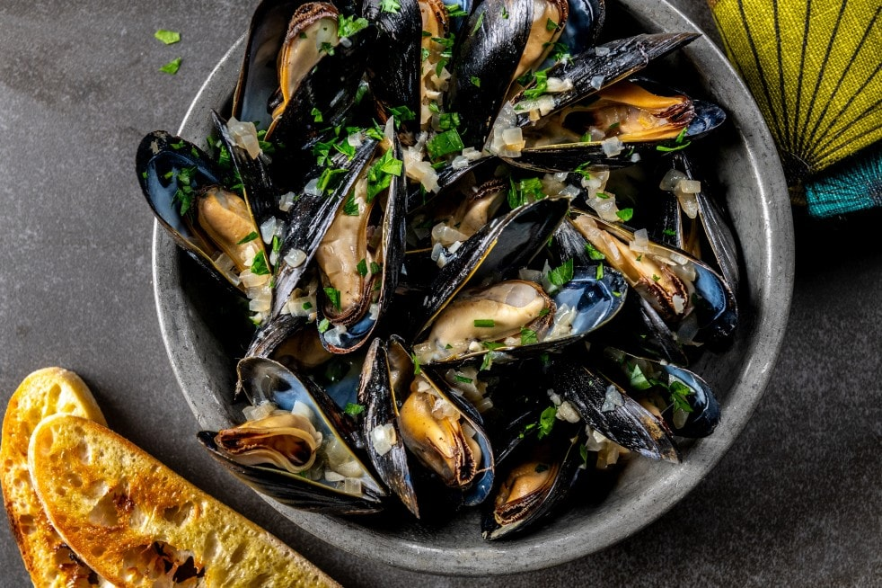

Mussels

Delicious Cooked Mussels
This is a simple 10 minute recipe for delicious cooked mussels, you can eat them by themselves, or in a seafood pasta if you prefer, yum!
Ingredients
- 2-3 Pounds of Mussels
- 1 Shallot
- 3-4 Cloves Garlic
- 1/2 Cup White Wine
- 1 Cup Veggie Broth
- 2 Tbsp Olive Oil or Butter (or both)
Steps
- Make sure this is being cooked in a pan with a lid
- We want to first check the mussels, if there are any that are open tap them on a counter or hard surface. If they do not close within a short time 3-5 seconds, throw them out.
additionally if any are cracked throw them out as well. This should be fairly obvious, when in doubt throw it out.
- Next once you have checked the mussles give them a good rinse
- Next we'll want to chop the garlic and shallot and place them into a pan with butter and let cook on medium high heat, after a few minutes toss in the mussels
- Immediately pour in the veggie broth and white wine and cover for 5 minutes. After 5 minutes check to see that all the mussels have opened, if not continue for another 1-2 minutes.
- Serve and enjoy! :)